Specialty coffee & natural wine
청주 흥덕구 · 스페셜티 커피와 내추럴 와인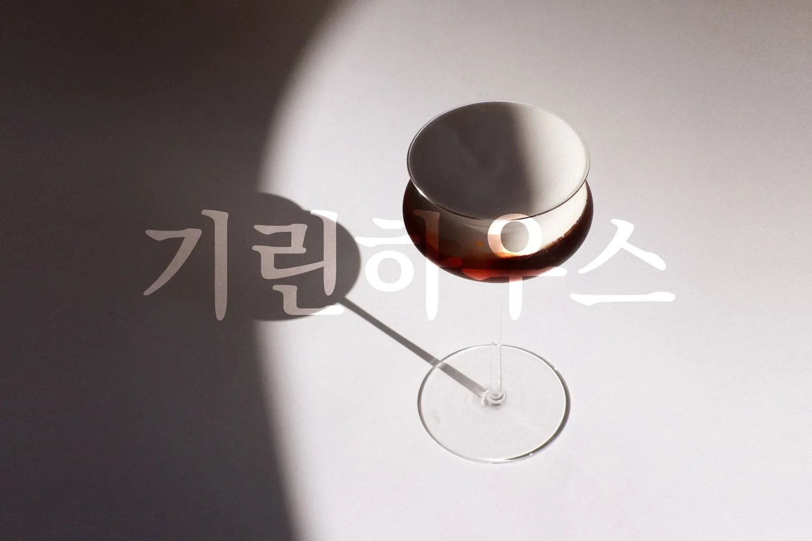
A small haus on a street corner. Coffee from the morning, natural wine into the night, and the light moving slowly across the room in between.
코너 건물 1층의 작은 집. 아침엔 커피를, 밤엔 내추럴 와인을 내요.Chapter I
Coffee
커피 · 말차 · 디저트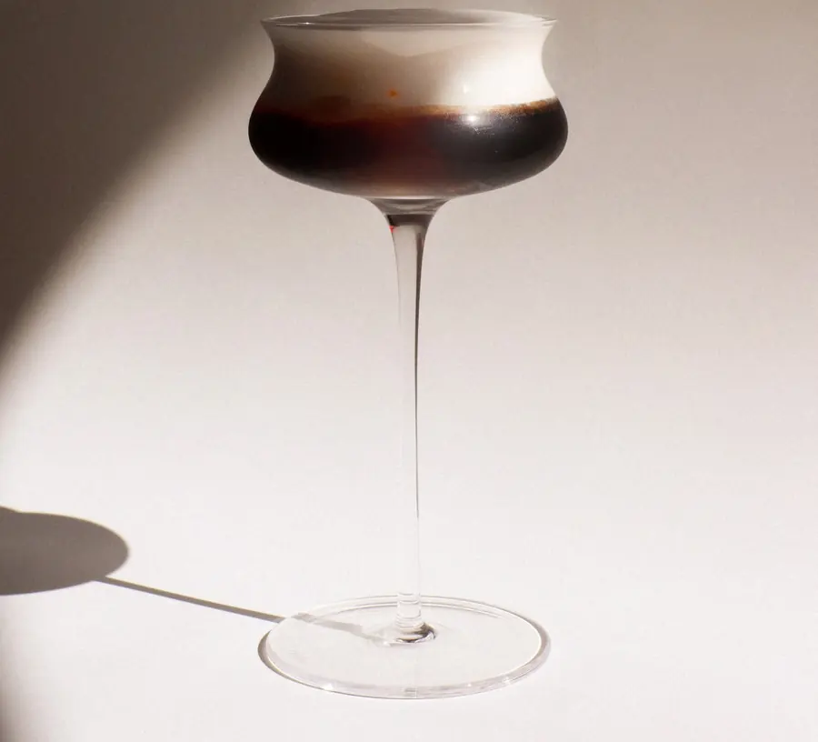
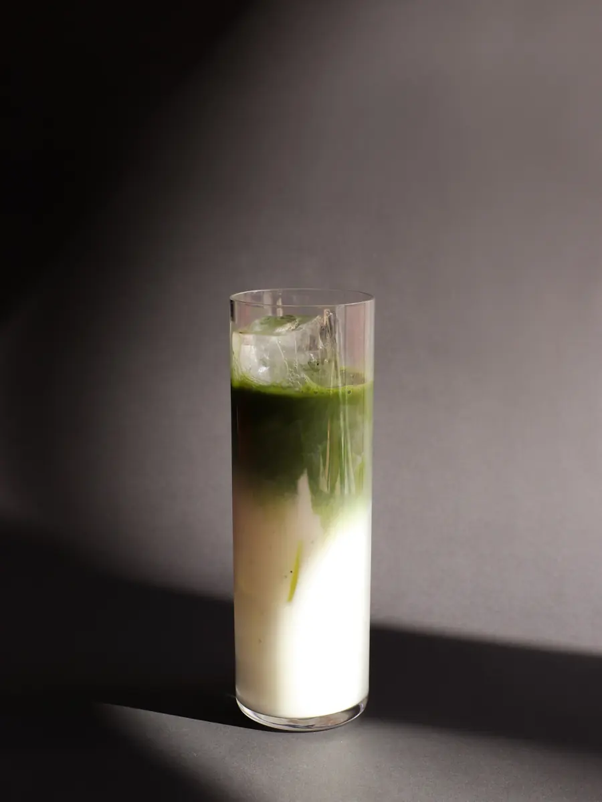
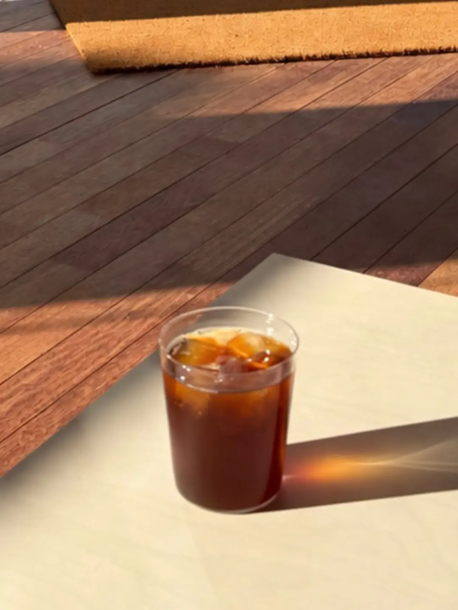
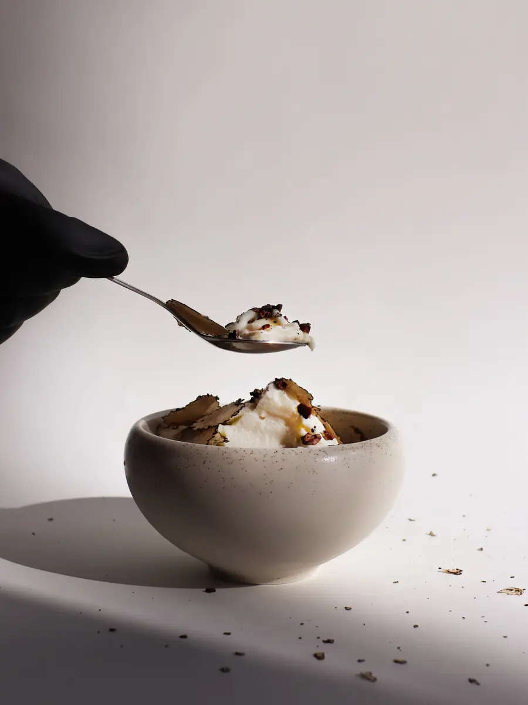
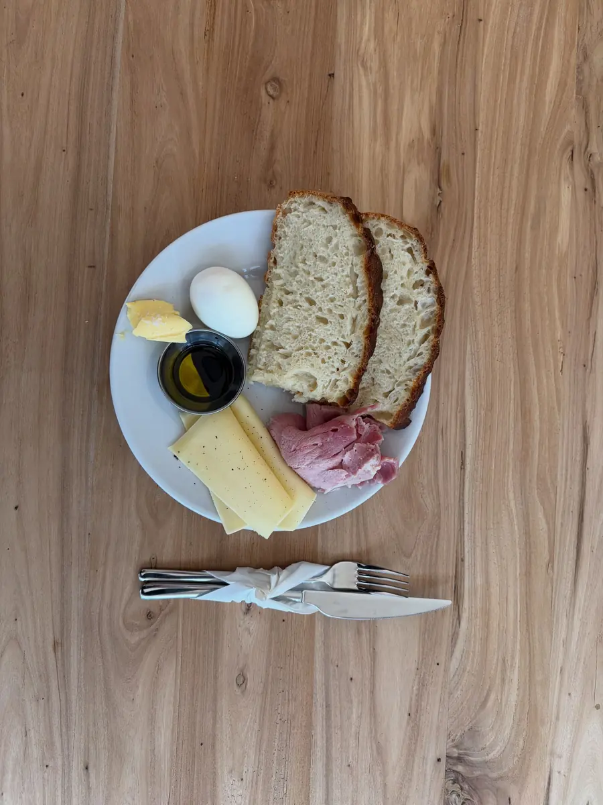
Chapter II
Natural Wine
내추럴 와인 · 금 · 토요일은 밤 11시까지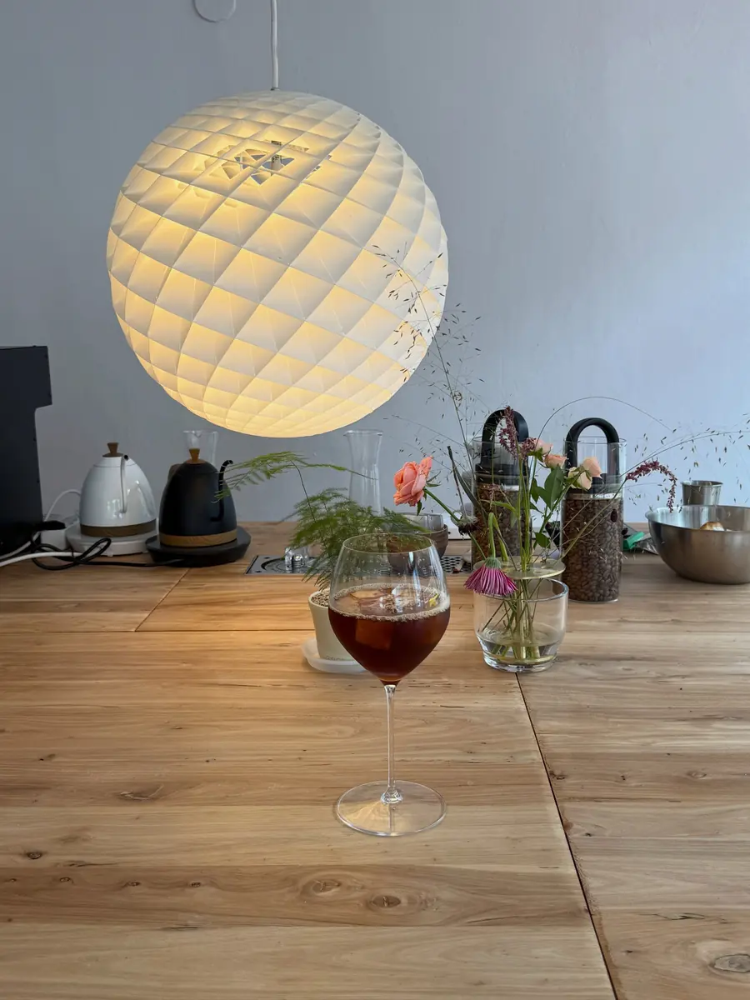
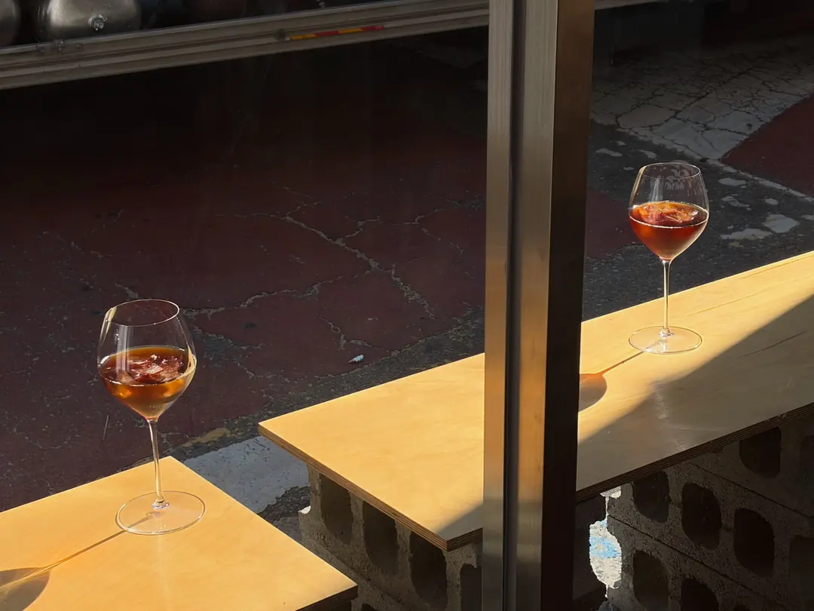
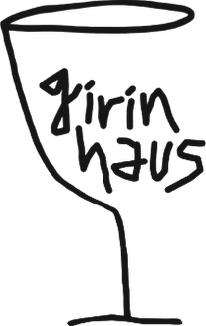
Now and then, an evening of wine, ice cream, small exhibitions and a DJ set.
가끔은 와인과 전시, 음악이 있는 모임이 열려요. Dates on Instagram, @girin_hausChapter III
The Haus
코너 건물 1층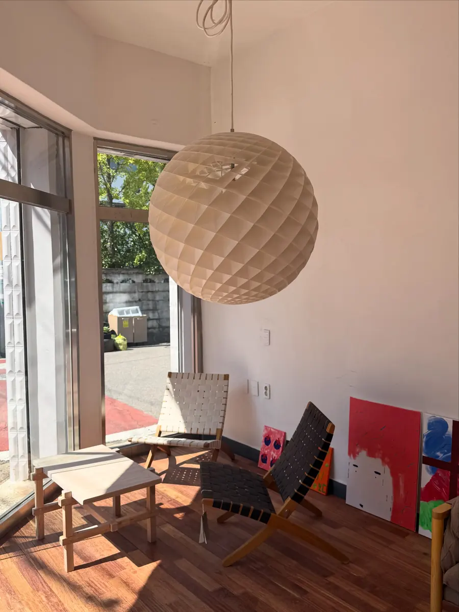
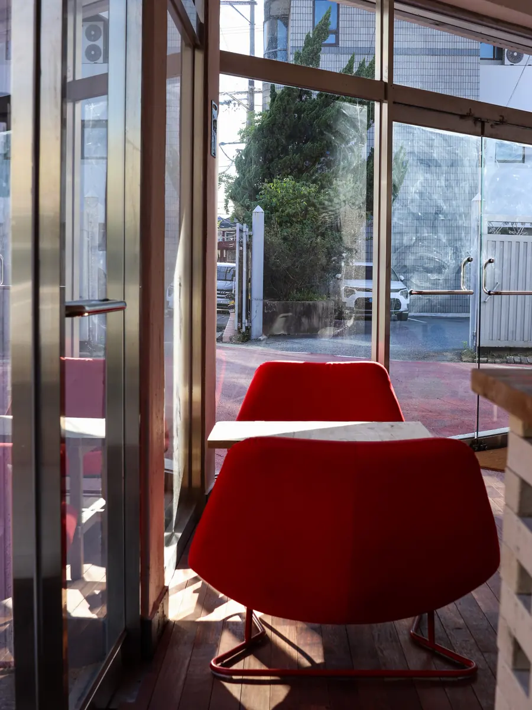
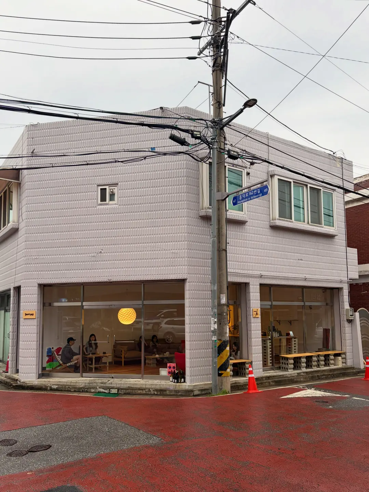
Visit
Find us
- Address
- 1F, 45 Heungdeok-ro 162beon-gil, Heungdeok-gu, Cheongju충북 청주시 흥덕구 흥덕로162번길 45 1층 · 코너 건물
- Hours
- Mon–Thu09:00 – 21:00Fri–Sat12:00 – 23:00Sun12:00 – 21:00
- Call
- 0507-1353-1766